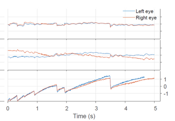
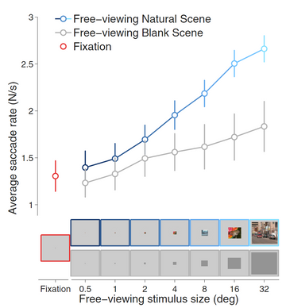
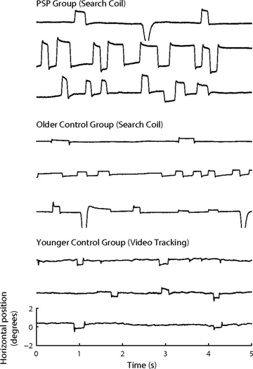

Ocular-Motor lab @ Berkeley
/
View of Full publication list
Search
Try Notion
Selected publications
Filter
Sort
The influence of scene tilt on saccade directions is amplitude dependent
Reeves, Stephanie, Otero-Millan, Jorge
Journal of the Neurological Sciences
2023
Head Orientation Influences Saccade Directions during Free Viewing
Reeves, Stephanie, Otero-Millan, Jorge, Rodriguez, Raul, Cooper, Emily
eNeuro
2022
Eye and head movement recordings using smartphones for telemedicine applications: measurements of accuracy and precision
Parker, Taylor Max , Badihian, Shervin, Hasson, Ahmed, Saber Tehrani, Ali S, Farrel, Nathan, Newman-Toker, David, Otero-Millan, Jorge
Front Neurol
2022
Modeling the effect of gravity on periodic alternating nystagmus
Shemesh, Ari, Kocoglu, Koray, Akdal, Gulden, Tumay Ala, Rahmi, Halmagyi, G. Michael , Zee, David S, Otero-Millan, Jorge
Journal of the Neurological Sciences
2022
Modeling the Interaction among Three Cerebellar Disorders of Eye Movements: Periodic Alternating, Gaze-evoked and Rebound Nystagmus
Shemesh, Ari, Kocoglu, Koray, Akdal, Gulden, Tumay Ala, Rahmi, Halmagyi, G. Michael , Zee, David S, Otero-Millan, Jorge
JCNS
2021
Evaluation of the Video Ocular Counter-Roll (vOCR) as a New Clinical Test of Otolith Function in Peripheral Vestibulopathy
Sadeghpour, Shirin, Fornasari, Francesco, Otero-Millan, Jorge, Carey, John P, Zee, David S, Kheradmand, Amir
JAMA otolaringology
2021

Torsional component of microsaccades during fixation and quick phases during optokinetic stimulation
Sadeghpour, Shirin, Otero-Millan, Jorge
JEMR
2020
Proof of Concept for an eyePhone App to Measure Video Head Impulses
Parker, Taylor Max , Farrel, Nathan, Otero-Millan, Jorge, Kheradmand, Amir, McClenney, Ayodele, Newman-Toker, David
Digital Biomarkers
2020
Visual Fixation and Continuous Head Rotations Have Minimal Effect on Set-Point Adaptation to Magnetic Vestibular Stimulation.
Ward, Bryan K, Zee, David S, Roberts, Dale C, Schubert, Michael, Perez-Fernandez, Nicolas, Otero-Millan, Jorge
Front Neurol
2019
Rebound nystagmus, a window into the oculomotor integrator.
Otero-Millan, Jorge, Colpak, Ayse Ilksen, Kheradmand, Amir, Zee, David S
Prog Brain Res
2019
Modeling the Triggering of Saccades, Microsaccades, and Saccadic Intrusions.
Otero-Millan, Jorge, Lance Optican, Macknik, Stephen L, Martinez-Conde, Susana
Front Neurol
2018
Exploring the Role of Temporoparietal Cortex in Upright Perception and the Link With Torsional Eye Position.
Otero-Millan, Jorge, Winnick, Ariel, Kheradmand, Amir
Front Neurol
2018
Three-dimensional eye movement recordings during magnetic vestibular stimulation.
Otero-Millan, Jorge, Zee, David S, Schubert, Michael, Roberts, Dale C, Ward, Bryan K
J Neurol
2017
Upright Perception and Ocular Torsion Change Independently during Head Tilt.
Otero-Millan, Jorge, Kheradmand, Amir
Front Hum Neurosci
2016
Knowing what the brain is seeing in three dimensions: A novel, noninvasive, sensitive, accurate, and low-noise technique for measuring ocular torsion.
Otero-Millan, Jorge, Roberts, Dale C, Lasker, Adrian, Zee, David S, Kheradmand, Amir
JoV
2015
V1 neurons respond differently to object motion versus motion from eye movements.
Troncoso, Xoana G, McCamy, Michael B, Najafian Jazi, Ali, Cui, Jie, Otero-Millan, Jorge, Macknik, Stephen L, Costela, Francisco M, Martinez-Conde, Susana
Nat Commun
2015

An oculomotor continuum from exploration to fixation.
Otero-Millan, Jorge, Macknik, Stephen L, Langston, Rachel E, Martinez-Conde, Susana
PNAS
2013
The impact of microsaccades on vision: towards a unified theory of saccadic function.
Martinez-Conde, Susana, Otero-Millan, Jorge, Macknik, Stephen L
Nature Rev Neurosci
2013
Microsaccades and blinks trigger illusory rotation in the "rotating snakes" illusion.
Otero-Millan, Jorge, Macknik, Stephen L, Martinez-Conde, Susana
J Neuroscience
2012

Distinctive features of saccadic intrusions and microsaccades in progressive supranuclear palsy.
Otero-Millan, Jorge, Serra, Alessandro, Leigh, R John, Troncoso, Xoana G, Macknik, Stephen L, Martinez-Conde, Susana
J Neuroscience
2011
Saccades and microsaccades during visual fixation, exploration, and search: foundations for a common saccadic generator.
Otero-Millan, Jorge, Troncoso, Xoana G, Macknik, Stephen L, Serrano-Pedraza, Ignacio, Martinez-Conde, Susana
JoV
2008
Selected publications